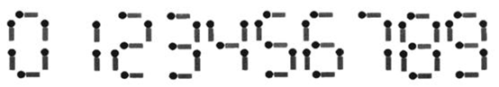
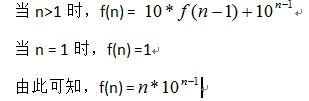

用n根火柴棍，可以拼出多少个形如“A+B=C”的等式？等式中的A、B、C是用火柴棒拼出的整数（若该数非零，则最高位不能是0）。用火柴棒拼数字0~9的拼法如图1所示。

图1 用火柴棒拼的数字0~9
另外，加号与等号各自需要两根火柴棒。
编写一个程序，输入火柴棒的根数n，输出能拼成的不同等式的数目。说明：（1）如果A≠B，则A+B=C与B+A=C视为不同的等式（A、B、C>=0）；（2）A和B最多为3位数；（3）n根火柴棒必须全部用上。
例如，输入18，输出应为9。即18根火柴棒可以拼出0+4=4、0+11=11、1+10=11、2+2=4 、2+7=9、4+0=4、7+2=9、10+1=11、11+0=11这9个等式。
用一个数组保存0~9每个数字所需火柴棒数，另外加号和等号需用去4根。
编写一个函数int needMatch(int num)用于统计数 num 需要的火柴棒个数。
程序中用二重循环对A（0~999）和B（0~999）的取值组合进行穷举，调用函数needMatch(A)、needMatch(B)和needMatch(A+B)分别返回等式中三个数所需的火柴棒的数目，若needMatch(A)+needMatch(B)+needMatch(A+B)+4==n，则计数。
#include <stdio.h>
int needMatch(int num); // 统计数 num 需要的火柴棒个数
int main()
{
int n,i,j,sum1,sum2,sum3,cnt;
scanf("%d",&n);
cnt=0;
for(i=0;i<1000;i++)
for(j=0;j<1000;j++) // 二重循环枚举两个加数
{
sum1=needMatch(i);
sum2=needMatch(j);
sum3=needMatch(i+j); // 分别求出两个加数和一个和分别需要的火柴棒
if(sum1+sum2+sum3+4==n)
cnt++;
}
printf("%d\n",cnt);
return 0;
}
int needMatch(int num) // 统计数 num 需要的火柴棒个数
{
int table[10]={6,2,5,5,4,5,6,3,7,6};
int sum=0;
if(num==0) // 数0 特殊处理
return(6);
else
{
while(num!=0)
{
sum+=table[num%10]; // 分解出每一位并加上此位的火柴棒个数
num=num/10; // 准备处理下一位
}
return(sum);
}
}
编程思路1中调用一个函数needMatch来返回每个数字num所需火柴棒数，在穷举时，这个函数会被调用1000*1000*3=3000000（3百万次），程序执行速度较慢。下面采用以空间换时间的方法，提高程序的执行速度。
由于等式中可能出现的数在0~1998之间，因此可以定义一个数组int needmatch[1999]，保存拼出0~1998每个数字所需要的火柴棒数，needmatch[i]的值为拼出数字i所需的火柴棒数。这样，先计算好数组中的每个元素的值后，在对等式中数A和B进行穷举时，等式中三个数所需的火柴棒数只需直接引用数组元素的值即可。相当于思路1中的needMatch函数只调用了1999次，因此程序的运行速度会大大提高。
#include <stdio.h>
int main()
{
int n,i,j,cnt;
int match[10]={6,2,5,5,4,5,6,3,7,6}; // 定义0~9每个数字所需要的火柴棒数
int needmatch[2000]; // 保存拼出0~1999每个数字所需要的火柴棒数
scanf("%d",&n);
for (i=0;i<=9;i++)
needmatch[i]=match[i];
for (i=10;i<2000;i++) // 计算10~1999中每个数需要的火柴棒数目
{
if (i<100) // 10~99 两位数
needmatch[i]=match[i/10]+match[i%10];
else if (i<1000) // 100~999 三位数
needmatch[i]=match[i/100]+match[i/10%10]+match[i%10];
else // 1000~1999 四位数
needmatch[i]=match[i/1000]+match[i/100%10]+match[i/10%10]+match[i%10];
}
cnt=0;
for(i=0;i<1000;i++)
for(j=0;j<1000;j++) //二重循环枚举两个加数
if(needmatch[i]+needmatch[j]+needmatch[i+j]+4==n)
cnt++;
printf("%d\n",cnt);
return 0;
}
本题选自洛谷题库 （https://www.luogu.org/problem/P1980）
题目描述
试计算在区间 1 到 n的所有整数中，数字 x(0 ≤ x ≤ 9)共出现了多少次？例如，在 1到 11中，即在 1,2,3,4,5,6,7,8,9,10,11中，数字 1 出现了 4 次。
输入格式
2个整数n,x，之间用一个空格隔开。
输出格式
1个整数，表示x出现的次数。
输入样例
11 1
输出样例
4
（1）编程思路1。
定义一个数组count[10]，元素count[0]~count[9]分别保存数字0~9在全部n个整数中用到的次数。初始值全为0，表示开始时每个数字均没用到。
程序可以写成一个循环，框架为：
for （i=1； i<=n ；i++）
{
对每个整数i，依次分离出i的各位数字k，对应的count[k]++；
}
对于整数i，分离出各位数字的操作为：不断除以10，记下余数，直到商为0。所得余数序列就是整数i从低位到高位的各位数字。具体描述为：
while (i)
{ count[ i %10] ++;
i=i/10;
}
（2）源程序1。
#include <stdio.h>
int main()
{
int n,i,t,x;
int count[10] = {0};
scanf("%d%d",&n,&x);
for(i = 1; i <= n; i++)
{
t = i;
while(t)
{
count[t%10]++; t/=10;
}
}
printf("%d\n",count[x]);
return 0;
}
（3）编程思路2。
程序1中n个整数各个数字的统计用一个二重循环完成，外循环处理n个整数，内循环处理n的每位数字，n的数字位数为log10n+1，所以这个算法的时间复杂度为O（n*log10n）。
下面我们给出一种更高效解决这个问题的方法。
1）考察由0、1、2、…、9十个数字组成的所有n位数。从n个0到n个9共有10n个n位数。在这10n个n位数中，0、1、2、…、9这十个数字使用次数相同，设为f(n)。f(n)满足如下递推式：

2）对于一个m位整数，我们可以把0到n之间的n+1个整数从小到大这样来排列：
000……0
…………
099……9
100……0
…………
199……9
…………
这样一直排到自然数n。对于从0到099……9这个区间来说，抛去最高位的数字不看，其低m-1位恰好就是m-1个0到m-1个9共个数。利用上面的递推公式，在这个区间里，每个数字出现的次数（不包括最高位数字）为。假设n的最高位数字是x，那么在n之间上述所说的区间共有x个。那么每个数字出现的次数x倍就可以统计完这些区间。再看最高位数字的情况，显然0到x-1这些数字在最高位上再现的次数为，因为一个区间长度为；而x在最高位上出现次数就是。接下来对，即n去掉最高位后的那个数字再继续重复上面的方法。直到个位，就可以完成各个数字的统计了。
比如，对于一个数字3482，我们可以这样来计算从1到3482之间所有数字中每个数字出现的次数。
从0到999，这个区间的每个数字的出现次数可以使用前面给出的递推公式，即每个数字出现400次。从1000到1999，中间除去千位的1不算，又是一个从000到999的排列，这样的话，从0到3482之间的这样的区间共有3个。所以从0000到2999之间除千位外，每个数字（0~9）出现次数均为3*400次。
然后再统计千位数字，每个区间长度为1000，所以0、1、2在千位上各出现1000次。而3则出现482+1=483次。
之后，抛掉千位数字，对于482，再使用上面的方法计算，一直计算到个位即可。
（4）源程序2。
#include <stdio.h>
#include <math.h>
int main()
{
int n,x,i,len,m,k,h;
int pow10[10] = {1}, count[10] = {0};
char d[11];
for(i = 1; i < 10; i++)
{
pow10[i] = pow10[i-1] * 10;
}
scanf("%d%d",&n,&x);
len = log10(n); // len 表示当前数字的位权,一个5位数，
// 最高位权为10的4次方，len=4
m = len;
sprintf(d, "%d", n); // 将数n 转换为字符串存入数组d中
k = 0; // k 存储当前最高位数字在d数组中的下标
h = d[k] - '0'; // h 存储当前最高位的数字
n %= pow10[len]; // 去掉n的最高位
while(len > 0)
{
if(h == 0) // 当前数字如果为0
{
count[0] += n + 1; h = d[++k] - '0';
len--; n %= pow10[len];
continue;
}
for(i = 0; i < 10; i++)
count[i] += h * len * pow10[len-1]; //
for(i = 0; i < h; i++) // 最高位0~h-1出现次数
count[i] += pow10[len];
count[h] += n + 1; // 最高位 h 出现次数
len--; h = d[++k] - '0';
n %= pow10[len]; // n 抛掉最高位
}
for(i = 0; i <= h; i++) // 个位上0~h出现次数
count[i] += 1;
for(i = 0; i <= m; i++) // 减去前导0的个数
count[0] -= pow10[i];
printf("%d\n",count[x]);
return 0;
}
本题选自洛谷题库 （https://www.luogu.org/problem/P1008）
题目描述
将1,2,⋯,9共9个数分成3组，分别组成3个三位数，且使这3个三位数构成1:2:3的比例，试求出所有满足条件的3个三位数。
输入格式
没有输入
输出格式
若干行，每行3个数字。按照每行第1个数字升序排列。
输入样例
无
输出样例
192 384 576
* * *
...
* * *
（输出被和谐了）
（1）编程思路1。
三个三位数，一共9个位，可以将每一个数位为枚举对象，一位一位地去枚举。
定义9个整型变量A、B、C、D、E、F、G、H、I分别表示三个数的9个位，每个变量取1~9之间的一个值。如ABC表示第1个数x、DEF表示第2个数y，GHI表示第3个数z。
根据A~I的具体取值，可以计算x、y、z，三个数需要满足条件2*x==y && 3*x==z（构成1：2：3的比例）；另外，还得考虑A~I各个数位的数字取值不相同，为确保9个变量取值各不相同，只要同时满足A+B+C+D+E+F+G+H+I==45（1+2+3+4+5+6+7+8+9=45）和A*B*C*D*E*F*G*H*I==362880（1*2*3*4*5*6*7*8*9=362880）即可。
（2）源程序1。
#include <stdio.h>
int main()
{
int a,b,c,d,e,f,g,h,i,x,y,z;
for (a=1;a<=9;a++)
for (b=1;b<=9;b++)
for (c=1;c<=9;c++)
for (d=1;d<=9;d++)
for (e=1;e<=9;e++)
for (f=1;f<=9;f++)
for (g=1;g<=9;g++)
for (h=1;h<=9;h++)
for (i=1;i<=9;i++)
{
x=a*100+b*10+c;
y=d*100+e*10+f;
z=g*100+h*10+i;
if (a+b+c+d+e+f+g+h+i==45 && a*b*c*d*e*f*g*h*i==362880
&& 2*x==y && 3*x==z)
printf("%d %d %d\n",x,y,z);
}
return 0;
}
（3）编程思路2。
按程序1的思路，穷举次数有99次，如果分别设三个数为x、2x和3x，以x为枚举对象，则x的最小值为123、最大值为329（因为下一个数341*3=1023>987），穷举的范围就减少为107。
由于对x进行穷举，因此需要将3个三位数的各个位上的数字分离出来。这9个数字可以像程序1中一样，用A~I这9个变量来保存。在程序2中，我们采用另外一种方法。定义一个一维数组a[9]，把组成整数x、2x、3x的9个数字存放在数组a中。然后用一个二重循环统计1~9这9个数字是否全在数组中出现。
（4）源程序2。
#include <stdio.h>
int main()
{
int a[9],x,cnt,i,j,flag;
for (x=123;x<=329;x++) // 枚举所有可能的解
{ // 把组成整数x、2x、3x的9个数字存放在数组a中
a[0]=x/100; a[1]=x/10%10; a[2]=x%10;
a[3]=(2*x)/100; a[4]=(2*x)/10%10; a[5]=(2*x)%10;
a[6]=(3*x)/100; a[7]=(3*x)/10%10; a[8]=(3*x)%10;
cnt=0;
for (i=1;i<=9;i++) // 检查1~9这9个数字是否都在a中
{
flag=-1;
for (j=0;j<9;j++)
if (i==a[j])
{ flag=j; break; }
if (flag!=-1)
cnt++;
else
break; // 如果有数字不在a中，则退出循环
}
if (cnt==9)
printf("%d %d %d\n",x,x*2,x*3);
}
return 0;
}
本题选自洛谷题库 （https://www.luogu.org/problem/P1618）
题目描述
将1，2，…，9共9个数分成三组，分别组成三个三位数，且使这三个三位数的比例是A:B:C，试求出所有满足条件的三个三位数，若无解，输出“No!!!”。
输入格式
三个数，A B C（A<B<C）。
输出格式
若干行，每行3个数字。按照每行第一个数字升序排列。
输入样例
1 2 3
输出样例
192 384 576
219 438 657
273 546 819
327 654 981
（1）编程思路。
分别设三个数为x1、x2和x3，以x1为枚举对象，计算出x2和x3（x2=b*x1/a; x3=c*x1/a），且x1的最小值为123、最大值为987*a/c（x3最大为987）。
由于对x1进行穷举，因此需要判断1~9这9个数字是否全在x1、x2和x3这三个数中出现。为此定义一个数组hash[10]，其中hash[i]的值代表数字i（0<=i<=9）在3个三位数中出现的次数，每次穷举前hash数组的元素值全为0。若穷举某个x1时，hash[1]~hash[9]的值全为1，则表示1~9这9个数字全在三个数中出现了，得到一组解。
（2）源程序。
#include <stdio.h>
int main()
{
int hash[10],x1,x2,x3,a,b,c,i,flag=0;
scanf("%d%d%d",&a,&b,&c);
for (x1=123;x1<=987*a/c;x1++) // 枚举所有可能的解
{
for (i=0;i<=9;i++) hash[i]=0;
x2=b*x1/a; x3=c*x1/a;
hash[x1/100]++; hash[x1/10%10]++; hash[x1%10]++;
hash[x2/100]++; hash[x2/10%10]++; hash[x2%10]++;
hash[x3/100]++; hash[x3/10%10]++; hash[x3%10]++;
for (i=1;i<=9;i++) // 检查1~9这9个数字是否都出现
if (hash[i]!=1) break;
if (i>9)
{
printf("%d %d %d\n",x1,x2,x3);
flag=1;
}
}
if (flag==0) printf("No!!!\n");
return 0;
}